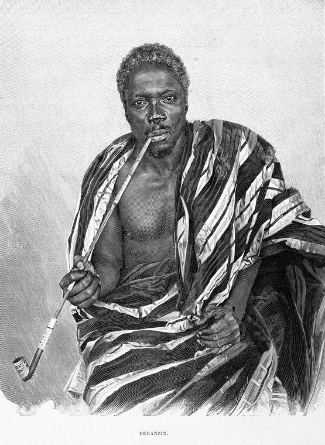
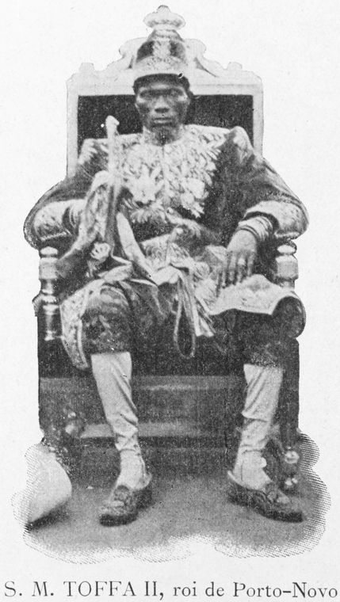
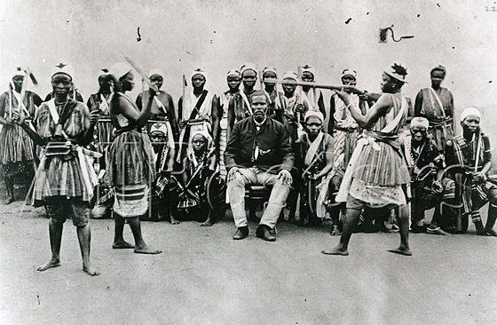
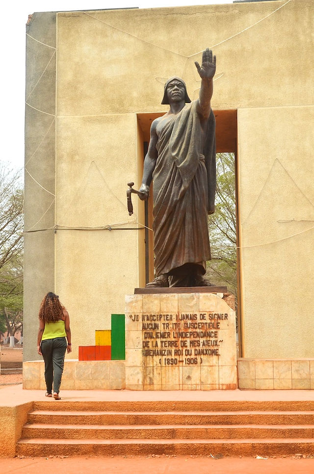
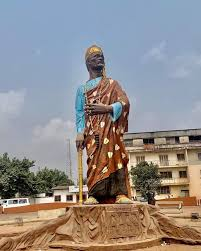

Les combattants de mon Drapeau

GBEHANZIN
, dont le nom en langue fon signifie<< le monde tient un oeuf dont la terre seule sent
le poids >>, est le plus célèbre roi du Dahomey ayant lutté, entre 1892 et 1894, contre l'occupation
française, avec l'appui des céièbres guerrièers amazones.
Né en 1845 et mort en 1906 est un roi d'Abomey.Fils du roi GLELE,il est d'abord connu sous le nom
d'Ahokponu puis de prince Kondo à partir de 1875. Il est traditionnellement le onzième roi d'Abomey.
Durant son règne , le royaume du Dahomey est défait, pour constituer la colonie du Dahomey,avec
le rattachement de Porto-Novo du roi TOFFA, son cousin et son ennemi.
Le prince Kondo est couronné roi BEHANZIN le 6 Javnvier 1890, après la mort de son père
le 28 Décembre 1889, au terme de près de 40 années de règnes, son demi-frère AHANHANZO,
héritier direct du trône, étant mort mystérieusement. Son couronnement est notamment marqué par des
sacrifices humaines. Le prince Kondo gouverne en se choissant le nom de GBEHANZIN. C'est un roi
de 45 ans,qui baigne dans les conflits dépuis son enfance. Les troupiers français le surnomment <<
BEC EN ZINC >>.
Le 19 Février 1890, les troupes françaises débarquent à Cotonou. Elles sont insuffisantes pour
contenir l'armée royale. D'où l'échec des troupes françaises.

TOFFA
, né dans les années 1850 et mort en 1908,est le roi de Porto-Novo. Son règne est de 1874 à 1908
fut marqué par une alternance d'alliance et de conflits avec des voisins militairement puissants
et expansionnistes,royaume de Dahomey,Angleterre et France.
Fils du roi SODJI, Toffa doit s'exiler à Tori puis àLagos lorsque Mikpon s'empare
du pouvoir en 1864. Les Anglais l'incitent à reprendre son titre par la force mais TOffa transigne.
Toffa se rend à la cours d'Abomey où il est bien accueilli par DA-DA GLELE KINI-KINI,
roi du Dahomey. Mési succède à Mikpon en 1872 mais lorsqu'il meurt à peine deux années plus tard,
Toffa revient à Porto-Novo avec 200 soldats du Dahomey,chasse le prince SOGNINGBE qui s'apprêtait
à prendre la succession et est sacré roi le 16 Septembre 1874. Pour prendre ses distances avec son trop
puissant voisin et aussi parce qu'il se mefie des Anglais qui ont soustrait DANGBO et KETENOU
à sa suzeraineté, Toffa signe en 1882 avec les français un Protectorat.

Les
MIno
ou Amazones
du Dahomey sont un ancien régiment militaire entièrement féminnin
Fon du royaume du Dahomey qui a existé jusqu'à la fin du XIX siécle. Elles sont surnommééeés ainsi
par les colons occidentaux et les historiens à cause de leurs similitudes avec les mythique Amazones.
Le Roi AHO HOUEGBADJA,troisième roi du Dahomey,est censé être à l'origine de la création du groupe
qui devient les Minon, un corps de chasseur d'éléphant appelé Gbêto. Durant le XVIII siècle,
le roi entraine certaines de ces femmes à devenir garde du corps.
La reine TASI HANGBE,est la vraie créatrice du corps des Minon du Dahomey,comme régiment
combattant,intégré aux armées professionnelles du royaume.
Les marchands européens notent leur présence ainsi que celle d'autres femmes guerrières parmi les
Ashantis. Durant les années suivantes, les guerrières acquièrent une réputation de combattent sans peur.
Elles combattent rarement, mais avec vaillance.
Le groupe de femmes guerrières est appelé Mino,ce qui signifie << nos mères >> en langue
fon, par l'armée masculine du Dahomey. A l'époque du roi GHEZO, le Dahomey se militarise
de plus en plus. Ghézo donne une grande importance à l'armée,augmente son budgetet améliore sa
structure. Les Mino sont entrainées,obtiennent des uniformes et sont équipées avec des fusils
Danois.A cette époque, les Mino sont entre 4000 et 6000 femmes et représentent environ
le tiers de l'armée du Dahomey.
Résumé:



Le Bénin a connu de braves combattants. Ce qui fait de lui un pays puissant de l'Afrique. Beaucoup de
rois domme amazones ce sont lutté pour le drapeau. Aujourd'hui on a la paix dans notre pays grâce à ces
éfforts fourni parmi ces combattants. Rémercions tous ces rois et amazones poiur leurs éfforts.